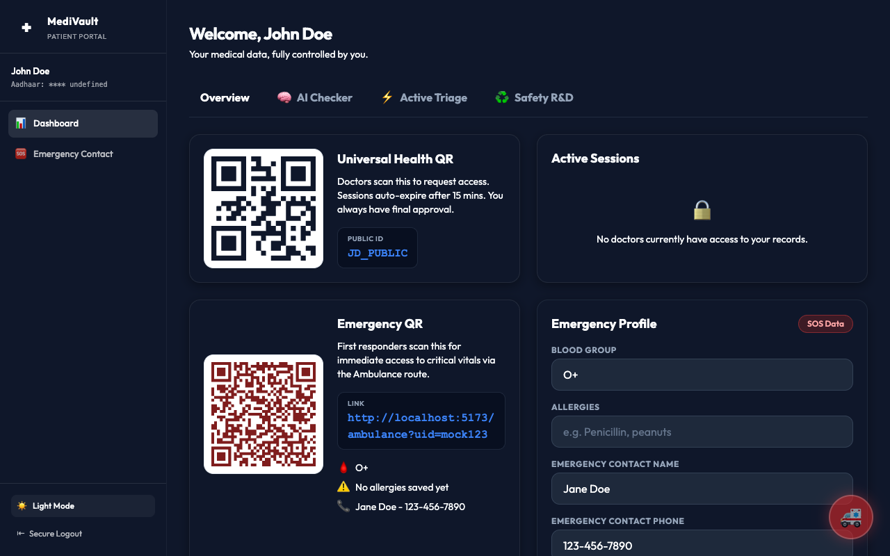
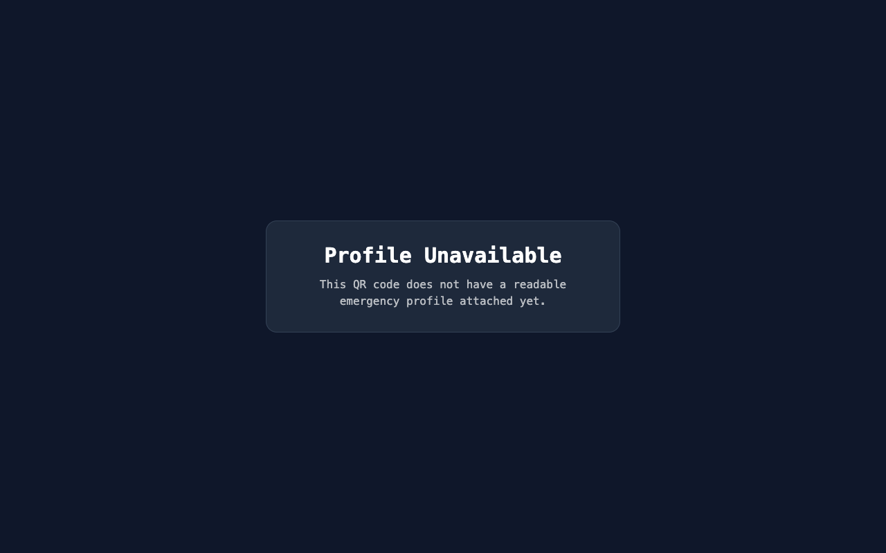

Advanced Health Records & Emergency Access System
Technical Architecture & Implementation Guide
MediVault is a comprehensive medical records management platform designed to bridge the gap between patient data privacy and emergency accessibility. It provides two distinct yet interconnected layers: a highly secure Patient-Doctor ecosystem and a rapid-response Emergency Mode.

Figure 1.1: The main Patient Dashboard showing Medical History
Below is the core Data Architecture Flow.
Designed specifically for high-stress scenarios. It bypasses the standard login flow, relying strictly on cryptographically generated patient Emergency IDs encoded in QR format. The interface explicitly utilizes a dark, low-glare aesthetic to ensure optimal readability for first responders in intense situations.

Figure 4.1: The fast-access Emergency Paramedic Dashboard